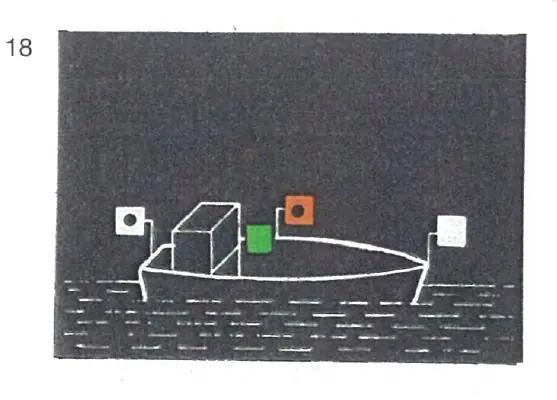
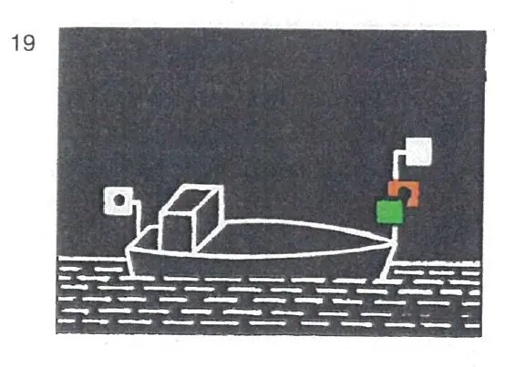
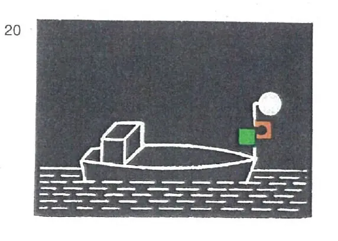
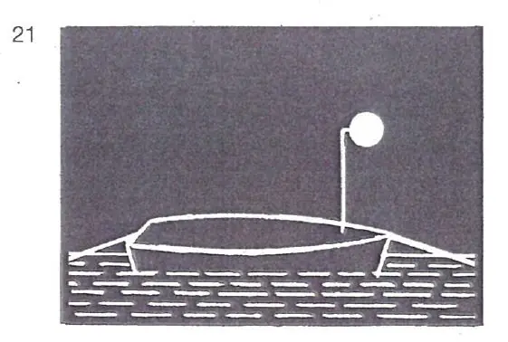
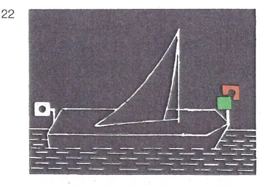
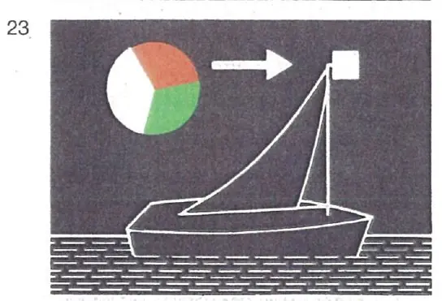
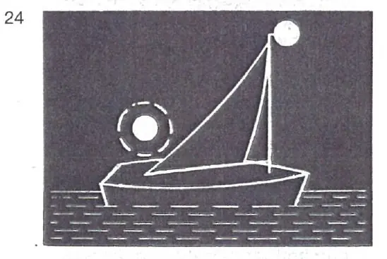
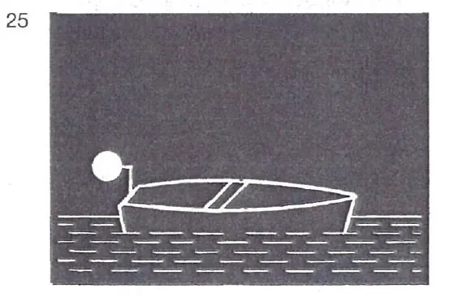
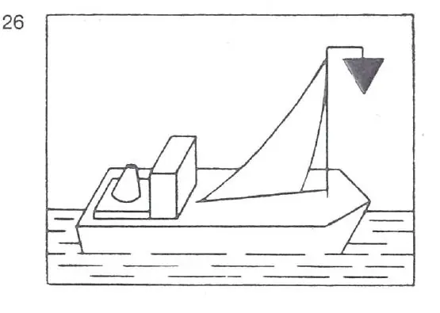

§ 3.13 Bezeichnung der Kleinfahrzeuge in Fahrt (Anlage 3 Bild 18, 19, 20, 21, 22, 23, 24, 25, 26)
Rheinschiffahrtspolizeiverordnung
1. | Einzeln fahrende Kleinfahrzeuge mit Maschinenantrieb müssen bei Nacht führen: | ||
a) | ein Topplicht, jedoch hell statt stark, in gleicher Höhe wie die Seitenlichter und mindestens 1,00 m vor diesen; |  | |
b) | Seitenlichter, die gewöhnliche Lichter sein dürfen. Sie müssen in gleicher Höhe und in einer Ebene senkrecht zur Längsachse des Fahrzeugs gesetzt sein und innenbords derart abgeblendet sein, daß das grüne Licht nicht von Backbord, das rote Licht nicht von Steuerbord gesehen werden kann; | ||
c) | ein Hecklicht | ||
oder | |||
d) | das Topplicht nach Buchstabe a; dieses Licht muß jedoch mindestens 1,00 m höher als die Seitenlichter gesetzt sein; |  | |
e) | die Seitenlichter nach Buchstabe b; diese Lichter können jedoch unmittelbar nebeneinander oder in einer einzigen Laterne am oder nahe am Bug in der Schiffsachse gesetzt sein; | ||
f) | ein Hecklicht; dieses Licht darf unter der Voraussetzung entfallen, daß anstelle des Topplichtes nach Buchstabe d ein von allen Seiten sichtbares weißes helles Licht geführt wird. |  | |
2. | Schleppt ein Kleinfahrzeug ausschließlich Kleinfahrzeuge oder führt es nur solche längsseits gekuppelt, muß es bei Nacht die Lichter nach Nummer 1 führen. | ||
3. | Geschleppte oder längsseits gekuppelte Kleinfahrzeuge müssen bei Nacht ein von allen Seiten sichtbares weißes gewöhnliches Licht führen. Dies gilt nicht für die Beiboote der Fahrzeuge. |  | |
4. | Einzeln fahrende Kleinfahrzeuge unter Segel müssen bei Nacht führen: |  | |
entweder die Seitenlichter nach Nummer 1 Buchstabe b oder e und ein Hecklicht | |||
oder diese Seitenlichter und das Hecklicht in einer einzigen Laterne am Topp |  | ||
oder ein von allen Seiten sichtbares weißes gewöhnliches Licht und bei der Annäherung anderer Fahrzeuge außerdem ein zweites weißes gewöhnliches Licht zeigen. |  | ||
5. | Einzeln weder mit Maschinenantrieb noch unter Segel fahrende Kleinfahrzeuge müssen bei Nacht ein von allen Seiten sichtbares weißes gewöhnliches Licht führen. Beiboote, auf die die gleichen Voraussetzungen zutreffen, brauchen dieses Licht jedoch nur bei der Annäherung anderer Fahrzeuge zu zeigen. |  | |
6. | Ein Kleinfahrzeug unter Segel, das gleichzeitig mit einer Antriebsmaschine fährt, muß bei Tag führen: |  | |
einen schwarzen Kegel mit der Spitze nach unten, so hoch wie möglich an einer Stelle, an der er am besten sichtbar ist. |